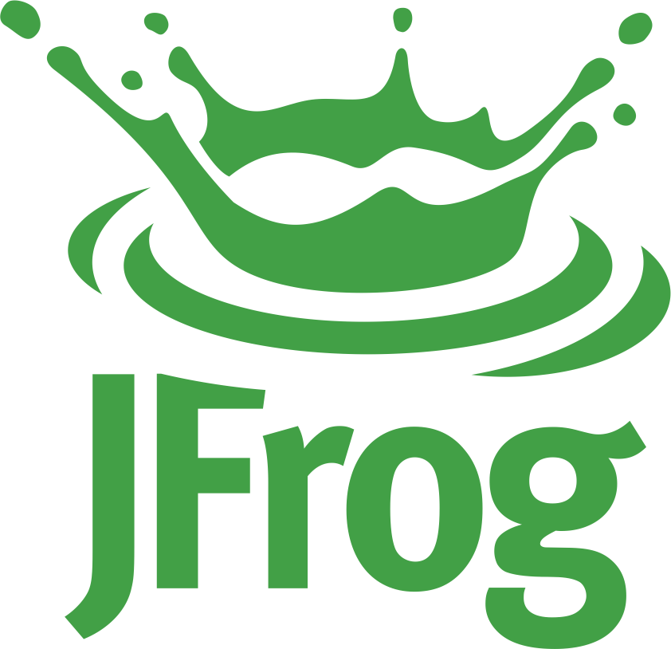
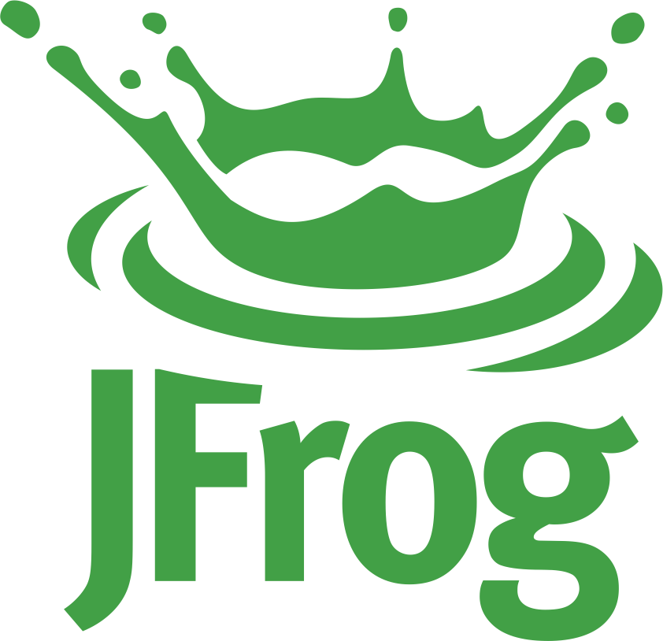
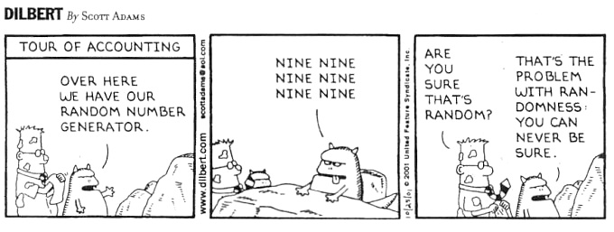

Javier G. Sogo | Senior software developer |
 JFrog LTD |
Conan C/C++ Package Manager
Javier G. Sogo | Senior software developer |
 JFrog LTD |
Conan C/C++ Package Manager
C++ Inside
Build once, run everywhere
24-25 septiembre de 2019
Madrid, España
Javier García Sogo
C++/Python/DevOps... engineer
@jgsogo
About me

Javier G. Sogo
Software | Conan.io | JFrog™
 jgsogo
jgsogo
 @jgsogo
@jgsogo
One source of truth
Same algorithm
Same bugs
Better maintenance
Not always possible
Different programming languages
Domain knowledge
Big problems, big solutions
Cross-platform languages
Microservices
Simple get complex
Simple applications that turns into full architectures
Miss the monolith
First draft of my slides for @CodemoMadrid. I'm planning to run a server and call to it from the actual slides in order to execute a DLL I'll have compiled live ü§Ø. Afraid of the demo effect?
— jgsogo (@jgsogo) September 14, 2019
üóìÔ∏è 24/09/2019 pic.twitter.com/oZ5H8NQd2Z
Random:
First draft of my slides for @CodemoMadrid. I'm planning to run a server and call to it from the actual slides in order to execute a DLL I'll have compiled live ü§Ø. Afraid of the demo effect?
— jgsogo (@jgsogo) September 14, 2019
üóìÔ∏è 24/09/2019 pic.twitter.com/oZ5H8NQd2Z
Pseudo-random:
List of winners
AI: Simulation and modelling
Randomness , reproducibility , performance
Models are not easy
Neither random generators
Neither random generators
Algorithm implementation
Distribution sampling
Floting point representation
Reproducibility across different languages, compilers, runtimes...
Love the monolith
Recycle/reuse the algorithm
Reuse the random number generator
(Only) solution
Reuse the same binary
samples ~lognormal( , )
Show me the code!
 jgsogo/cpp-inside
jgsogo/cpp-inside
Building blocks
Native library
Wrapper for every language
Data interchange layer
Application
Application
Data interchange layer
Protocol buffers
Language neutral
Platform neutral
Structured data
Fast and reliable
Data layer | Request samples
message Model {
enum Name {
BERNOULLI = 0;
GEOMETRICAL = 5;
POISSON = 6;
EXPONENTIAL = 9;
BINOMIAL_NEGATIVE = 10;
LOGNORMAL = 11;
}
Name id = 1;
map< string, float> params = 2;
}
message SampleRequest {
Model model = 1;
float seed = 2;
uint32 n_samples = 3;
}
Data layer | Samples returned
message Sample {
Model model = 1;
float seed = 2;
repeated float samples = 3;
}
C interface
#ifdef __cplusplus
extern "C" {
#endif
typedef void (*callback_t)(void* state,
const void* data,
const void* status);
CRND_EXPORT void help(void* state,
callback_t help_callback);
CRND_EXPORT void sample(void* state,
const void* sample_request,
callback_t sample_callback);
#ifdef __cplusplus
}
#endif
C interface | Sample function
typedef void (*callback_t)(void* state,
const void* data,
const void* status);
void sample(void* state,
const void* sample_request,
callback_t sample_callback);
| state | caller context |
| sample_request | request message |
| sample_callback | function callback |
C interface | Sample function
void sample(void* state, const void* sample_request,
callback_t sample_callback) {
SPDLOG_DEBUG("> C::sample");
SampleRequest request =
Serialized< SampleRequest>::parse(sample_request);
Sample sample_message;
auto status = sample(request, sample_message);
SPDLOG_TRACE("C::sample::before callback");
sample_callback(state,
Serialized< crnd::Sample>(sample_message),
Serialized< crnd::Status>(*status));
SPDLOG_TRACE("C::sample::after callback");
SPDLOG_DEBUG("< C::sample");
}
sample_request >> (sample) >> sample_message
C interface | Callback
Wrapper for
- Load the native library
- Map interface functions (sample)
- Build and serialize the proto message
- Call the function
- Deserialize the response
Wrapper for Python
import ctypes
from messages import status_pb2, sample_request_pb2, sample_pb2, model_pb2
class CRND:
def __init__(self, path_to_library):
self.dll = ctypes.cdll.LoadLibrary(path_to_library)
def lognormal(self, seed, samples, mu, sigma):
model = model_pb2.Model()
model.id = model_pb2.Model.LOGNORMAL
model.params["mu"] = mu
model.params["sigma"] = sigma
return self._sample(seed, samples, model)
def _sample(self, seed, samples, model):
request = sample_request_pb2.SampleRequest()
request.seed = seed
request.n_samples = samples
request.model.CopyFrom(model)
serialized = ProtoSerialized.build_from(request)
sample, status = _call(self.dll.sample,
sample_pb2.Sample,
serialized.as_ref())
if not status.ok:
raise Exception(status.error_message)
return sample.samples
Wrapper for Python
import ctypes
from messages import status_pb2, sample_request_pb2, sample_pb2, model_pb2
class CRND:
def __init__(self, path_to_library):
self.dll = ctypes.cdll.LoadLibrary(path_to_library)
def lognormal(self, seed, samples, mu, sigma):
model = model_pb2.Model()
model.id = model_pb2.Model.LOGNORMAL
model.params["mu"] = mu
model.params["sigma"] = sigma
return self._sample(seed, samples, model)
def _sample(self, seed, samples, model):
request = sample_request_pb2.SampleRequest()
request.seed = seed
request.n_samples = samples
request.model.CopyFrom(model)
serialized = ProtoSerialized.build_from(request)
sample, status = _call(self.dll.sample,
sample_pb2.Sample,
serialized.as_ref())
if not status.ok:
raise Exception(status.error_message)
return sample.samples
Wrapper for Python
import ctypes
from messages import status_pb2, sample_request_pb2, sample_pb2, model_pb2
class CRND:
def __init__(self, path_to_library):
self.dll = ctypes.cdll.LoadLibrary(path_to_library)
def lognormal(self, seed, samples, mu, sigma):
model = model_pb2.Model()
model.id = model_pb2.Model.LOGNORMAL
model.params["mu"] = mu
model.params["sigma"] = sigma
return self._sample(seed, samples, model)
def _sample(self, seed, samples, model):
request = sample_request_pb2.SampleRequest()
request.seed = seed
request.n_samples = samples
request.model.CopyFrom(model)
serialized = ProtoSerialized.build_from(request)
sample, status = _call(self.dll.sample,
sample_pb2.Sample,
serialized.as_ref())
if not status.ok:
raise Exception(status.error_message)
return sample.samples
Wrapper for Python
def _call(func, response_class, sample_request):
@ctypes.CFUNCTYPE(None, ctypes.c_void_p, ctypes.POINTER(ProtoSerialized), ctypes.POINTER(ProtoSerialized))
def cb(_, data_in, status_in):
cb.status = status_in.contents.parse_as(Status)
if cb.status.ok:
cb.data = data_in.contents.parse_as(response_class)
func(None, sample_request, cb) # No need to pass context
if cb.status.ok:
return cb.data, cb.status
else:
return None, cb.status
Wrapper for Python
def _call(func, response_class, sample_request):
@ctypes.CFUNCTYPE(None, ctypes.c_void_p, ctypes.POINTER(ProtoSerialized), ctypes.POINTER(ProtoSerialized))
def cb(_, data_in, status_in):
cb.status = status_in.contents.parse_as(Status)
if cb.status.ok:
cb.data = data_in.contents.parse_as(response_class)
func(None, sample_request, cb) # No need to pass context
if cb.status.ok:
return cb.data, cb.status
else:
return None, cb.status
Wrapper for Python
def _call(func, response_class, sample_request):
@ctypes.CFUNCTYPE(None, ctypes.c_void_p, ctypes.POINTER(ProtoSerialized), ctypes.POINTER(ProtoSerialized))
def cb(_, data_in, status_in):
cb.status = status_in.contents.parse_as(Status)
if cb.status.ok:
cb.data = data_in.contents.parse_as(response_class)
func(None, sample_request, cb) # No need to pass context
if cb.status.ok:
return cb.data, cb.status
else:
return None, cb.status
Try it yourself
 jgsogo/cpp-inside
jgsogo/cpp-inside


Love the monolith
- Solid, simpler, faster
- Easy to test
- Consistent deploy
- No extra complexity
Why C++ inside?
- Compile to native library (call from any language)
- Easy and powerful language
- Ecosystem is improving quickly
- Worldwide community (and Madrid)